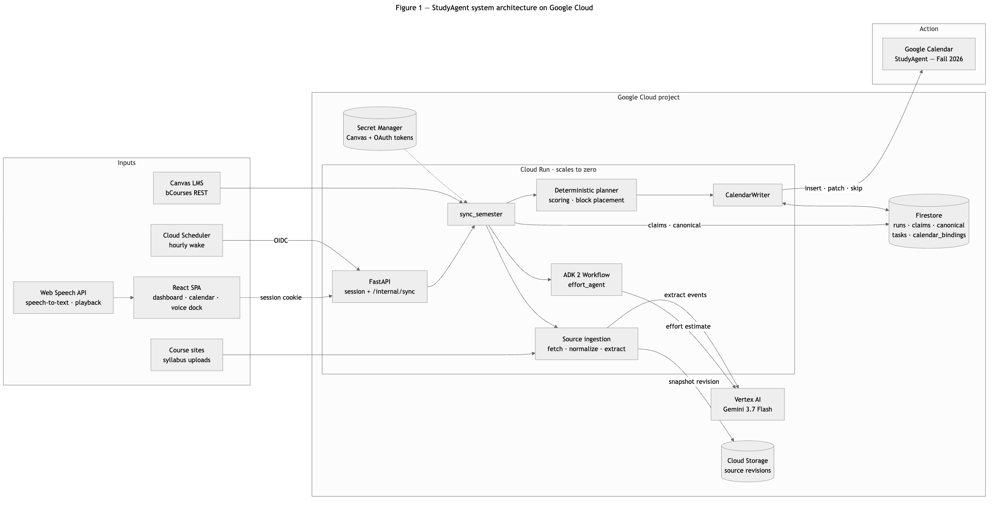
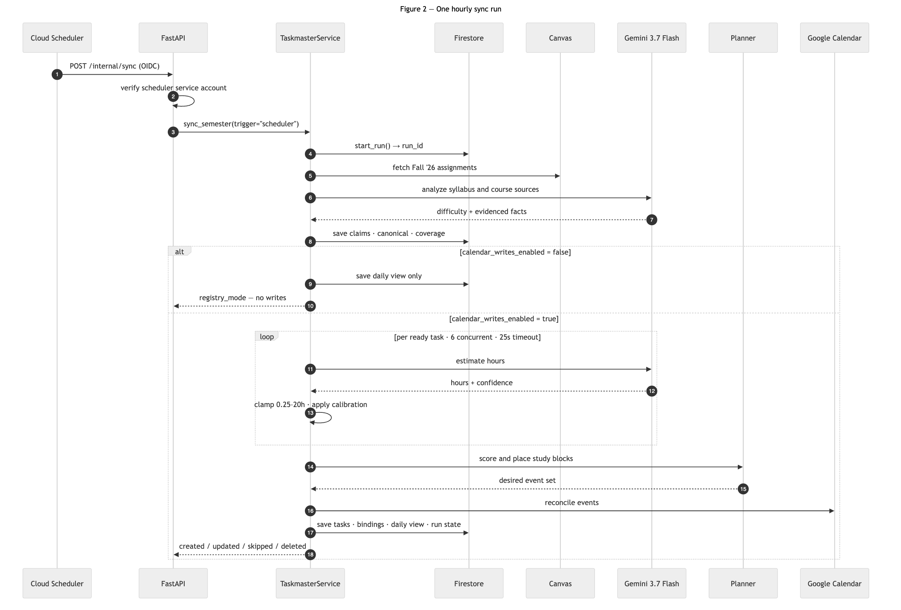
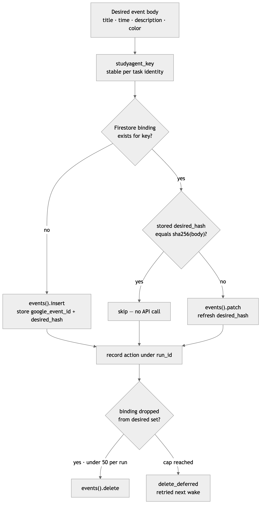

Long-running academic Taskmaster on Google Cloud. Gemini 3.7 Flash via Vertex AI, Google ADK 2, Cloud Run, Firestore, Cloud Storage, Secret Manager, Cloud Scheduler.

Figure 1. StudyAgent system architecture on Google Cloud.
Canvas, course sources, and an hourly Cloud Scheduler wake all feed one Cloud Run
container. Gemini 3.7 Flash on Vertex AI estimates effort and extracts schedule
facts, a deterministic planner ranks and places the work, and CalendarWriter
reconciles a single dedicated Google Calendar. Firestore and Cloud Storage hold all
durable state, so Cloud Run carries none and can scale to zero between wakes.

Figure 2. One hourly sync run, end to end.
Cloud Scheduler wakes the service over an authenticated endpoint. Gemini is called
twice, once to analyze syllabus and course text and once per task to estimate effort,
and both calls are bounded by timeouts and clamps. Priority, block placement, and the
Calendar writes stay deterministic. When calendar writes are disabled the run stops
after persisting the registry.

Figure 3. How one Calendar write decides its own action.
Each event carries a stable studyagent_key and a Firestore binding storing a
SHA-256 hash of the intended body. A rerun compares hashes and skips, patches, or
inserts, so an unchanged sync makes no Calendar API calls. Deletes are capped at 50
per run and the remainder defers to the next wake.